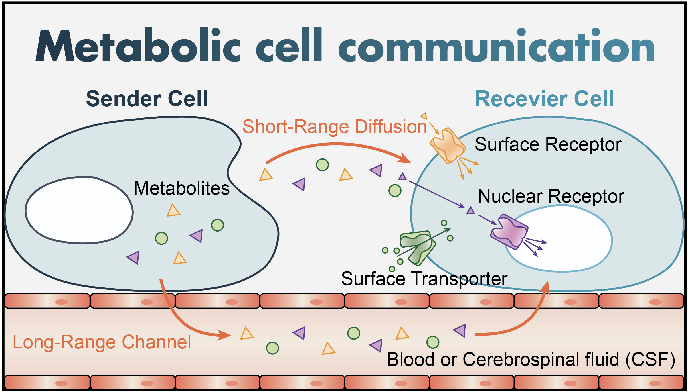
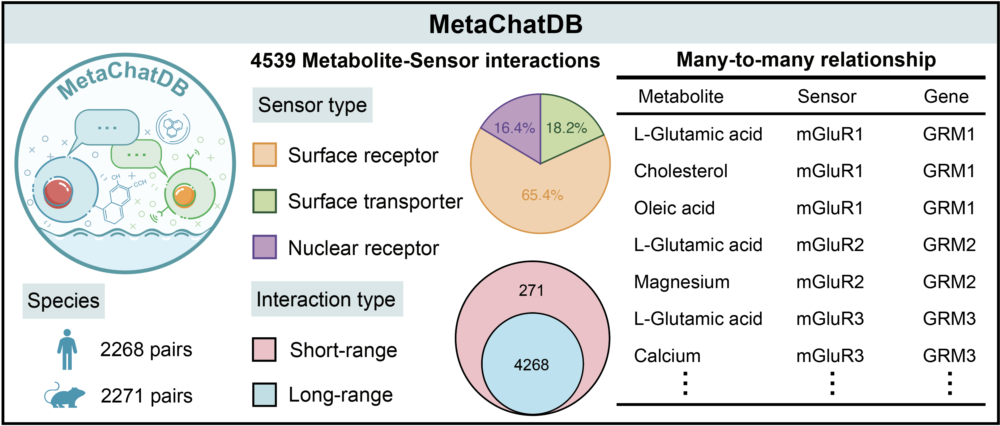

Welcome to MetaChat’s documentation!


MetaChat is a Python package to screen metabolic cell communication (MCC) from spatial multi-omics data of transcriptomics and metabolomics. It contains many intuitive visualization and downstream analysis tools, provides a great practical toolbox for biomedical researchers.
Metabolic cell communication
Metabolic cell-cell communication (MCC) occurs when sensor proteins in the receiver cells detect metabolites in their environment, activating intracellular signaling events. There are three major potential sensors of metabolites: surface receptors, nuclear receptors, and transporters. Metabolites secreted from cells are either transported over short-range distances (a few cells) via diffusion through extracellular space, or over long-range distances via the bloodstream and the cerebrospinal fluid (CSF).
MetaChatDB
MetaChatDB is a literature-supported database for metabolite-sensor interactions for both human and mouse. All the metabolite-sensor interactions are reported based on peer-reviewed publications. Specifically, we manually build MetaChatDB by integrating three high-quality databases (PDB, HMDB, UniProt) that are being continually updated.
New
Jun 26, 2024: We released MetaChat version 0.0.2. This version standardizes function names and fixes some bugs.
MetaChat’s features
MetaChat uses a Flow Optimal Transport algorithm, which frames MCC inference as an optimal transport problem from metabolite distributions to sensor distributions that are constrained by metabolite transport flow conditions. This algorithm simultaneously considers short- range and long-range transport of metabolites, as well as species competition between metabolites and sensors.
MetaChat has multiple visualization and downstream analysis tools to dissect MCC flow directions, multiple levels of MCC aggregation, pairwise MCC pathway patterns between cell groups, and MCC remodelling in receiver cells.
The method can flexibly be applied to either spatial multi-omics measurements on either the same or multiple tissue slices, or, in combination with flux analysis, spatial transcriptomics alone of varying spatial resolution (single-cell or spot-level), meaning that vast amounts of existing data can be analyzed immediately for MCC.
Reference
Luo, S., Almet, A.A., Nie, Q.. Spatial metabolic communication flow of single cells.
Contents: